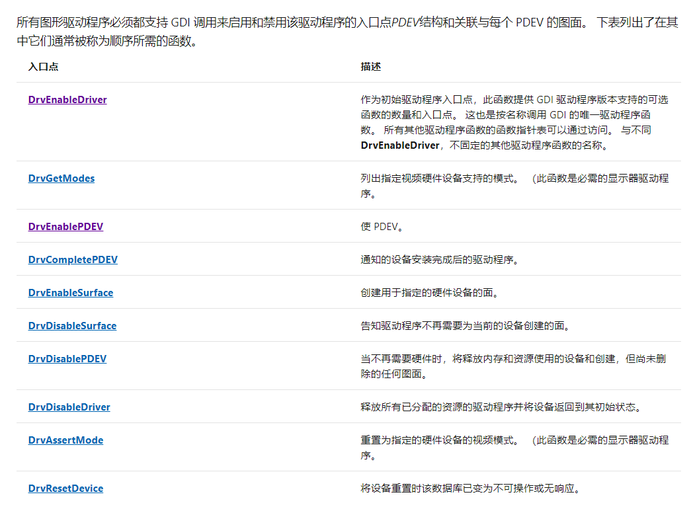
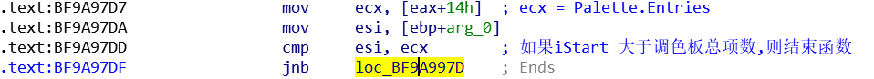
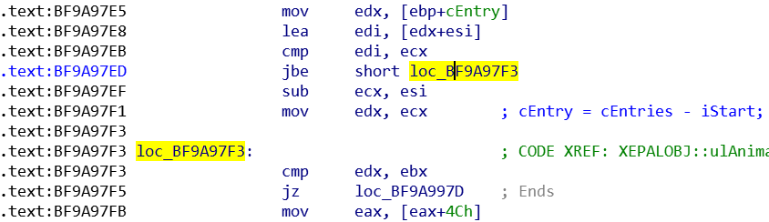
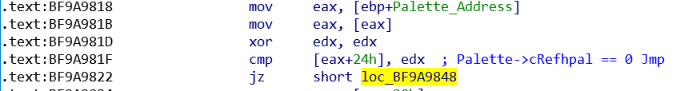
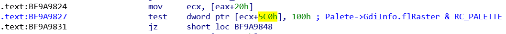
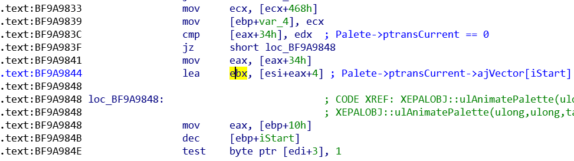
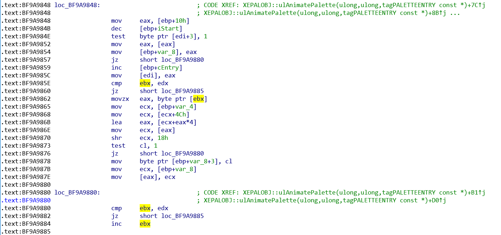

在 Windows Vista 的时候,微软将打印机驱动从内核态移动到了用户态,这样可以解决相当一部分打印机驱动导致的漏洞,因为第三方开发的驱动的安全性有待提高.
这样做好处的显而易见的,减少了许多第三方开发的打印机驱动的漏洞,但是也带来了弊端,通过Hook图形设备驱动接口 Or 打印机驱动接口,为安全研究员们扩展了一个新的攻击面,这就有些得不偿失了.
因此本系列文章将从简入深的讲解多个由安全性提高转化成安全性”降低”的多个漏洞,其中包含但不限于(空指针引用,内存越界读写等)
创建图形驱动程序必须要创建的函数如下
这些函数是必须要创建的,如果为空,则在内核中创建对象不可能成功.
通过
CreateDC
指定名称可以创建一个关于打印机设备的上下文环境,我们阅读源码后发现他会回调打印机
DDI
函数中的
DrvEnablePDEV
,并传递了多个重要数据结构,我们可以
Hook DrvEnablePDEV
函数来修改函数执行过后的结果,当其返回内核时,我们即可控制函数的执行流程了.
不过在早期的 Windows 中,安全性并没有现在这么高,很多安全保护都是不存在的,就比如说空指针引用,我们就可以利用他来达到本地权限提升的目的
AnimatePalette
函数置换指定逻辑调色板中的颜色项,在Win32k中该函数调用了实现函数
XEPALOBJ::ulAnimatePalette
来实现功能.
但是在早期的Windows7中,该函数存在空指针引用漏洞,利用该漏洞我们可以达到本地权限提升的目的.
我们可以使用用户态包装好的
AnimatePalette
函数来调用到
GreAnimatePalette
函数或者从ShaDownSSDT中搜素编号调用
NtGdiDoPalette
函数都可以执行到
XEPALOBJ::ulAnimatePalette.
由于该函数是
XEPALOBJ
类中的函数,所以存在一个This指针,通常为ecx,此处也是一样,ecx保存着指向
PALETTE
结构的指针.
该函数首先判断了传入的iStart是否大于颜色项的总个数,如果大于则结束函数
接着判断iStart + cEntry 是否大于 cEntries,如果大于则将cEntry设置为cEntries-iStart.
判断是否为某个DC中的调色板,判断Palette.cRefhpal是否存在,不存在则跳出循环
判断Palete->GdiInfo.flRaster & RC_PALETTE是否为真,如果为假,则跳出循环
最后判断 Palete->ptransCurrent 是否存在,如果不存在则跳出循环,存在则初始化两个局部变量,一个指向 Palete->ptransCurrent ,另外一个指向 Palete->ptransCurrent->ajVector[iStart] .
下面是个循环,大致意思就是从函数的第三个参数 (ppalSrc) 复制内容到 Palette.pFirstColor[iStart] 中,并且判断 Palete->ptransCurrent 是否为真,如果为真则读取 Palete->ptransCurrent->ajVector[iStart] 处的内容当作偏移,来写入到 palSurf.pFirstColor[Palete->ptransCurrent->ajVector[iStart]] 中. (写入内容为*ppalSrc)
结束循环后,函数会再次判断 Palete->ptransCurrent 是否存在, Palete->GdiInfo.flRaster & RC_PALETTE 是否为真以及判断 Palete->fs& PDEV_DISABLED 是否为假,如果为False,则会从 PEDV->apfn[] 表中寻找需要的函数函数并跳转执行.

是不是很熟悉
PPFNDRV
,这个上文是不是回调过
DrvEnablePDEV
,这里是要回调
DrvSetPalette
吗?
理论上来说是的,但是实际上来说,上文保存了一个必须创建图形驱动程序必须要创建的函数表,其中并没有
DrvSetPalette
,因为这个函数是可选的.
问题来了,如果不存在这个函数,但是函数调用了他,会出现什么问题呢?
答对了,空指针引用,在老版本 Windows 中并没有对函数指针是否正确进行验证,所以如果函数指针指向0,依然会Call过去,这样就造成了一个空指针引用的漏洞,我们只要在0处申请内存,填充代码,在同一进程上下文中即可触发该引用,让操作系统执行我们的代码.

Poc:Null-DDI.zip